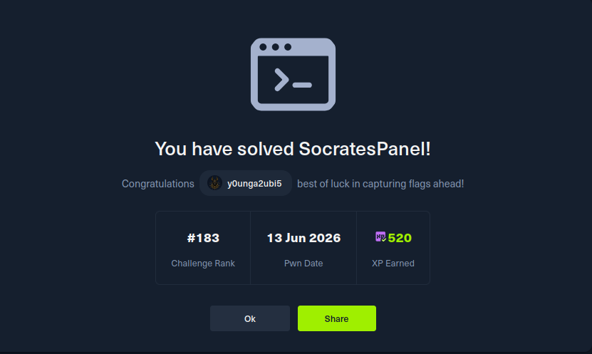

{% raw %}
<div class="legacy-main container">
        <a href="../writeups.html" class="back-link"><i class="fas fa-arrow-left"></i> Retour aux analyses</a>

        <article>
            <div class="challenge-card">
                <span class="challenge-platform"><i class="fas fa-flag"></i> HackTheBox CTF</span>
                <h1 class="challenge-title">Socrates</h1>
                <p class="challenge-subtitle">
                    Poisoning a Go CDN cache with a GET body, racing the admin bot refresh, then turning an admin-only
                    Tornado panel into a Redis command channel.
                </p>
                <div class="challenge-meta">
                    <span class="meta-badge date"><i class="fas fa-calendar"></i> 2026-06-13</span>
                    <span class="meta-badge category">Web Exploitation</span>
                    <span class="meta-badge tag">Cache Poisoning</span>
                    <span class="meta-badge tag">XSS</span>
                    <span class="meta-badge tag">Race Condition</span>
                    <span class="meta-badge tag">SSRF</span>
                    <span class="meta-badge tag">Redis</span>
                </div>
                <div class="challenge-stats">
                    <div class="stat-item">
                        <span class="stat-value difficulty-hard">Hard</span>
                        <span class="stat-label">Difficulty</span>
                    </div>
                    <div class="stat-item">
                        <span class="stat-value vulns">4</span>
                        <span class="stat-label">Bugs Chained</span>
                    </div>
                    <div class="stat-item">
                        <span class="stat-value impact">Flag Leak</span>
                        <span class="stat-label">Impact</span>
                    </div>
                    <div class="stat-item">
                        <span class="stat-value difficulty-hard">Tornado/Go</span>
                        <span class="stat-label">Stack</span>
                    </div>
                </div>
            </div>

            <!-- TODO when publishing: remove noindex, add this page to sitemap.xml, replace À venir status badges, and restore normal listing link text. -->
    <div class="pending-section">
              <div class="pending-lock">&#128274;</div>
              <h2 class="pending-title">Writeup à venir</h2>
              <p class="pending-msg">Ce challenge est encore actif sur la plateforme. Le writeup sera publié dès sa clôture.</p>
              <div class="pending-proof">
                <p class="proof-label">Preuve de résolution</p>
                
              </div>
            </div>

        </article>
    </div>
{% endraw %}
